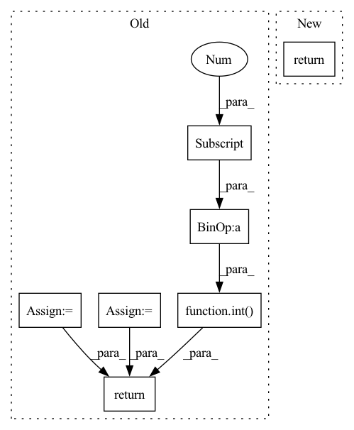

Pattern ID :11301

Before Change
min_c = np.min(np_polygon, axis=0)
max_c = np.max(np_polygon, axis=0)
h_extend = int(round(0.1 * (max_c[1] - min_c[1])))
w_extend = int(round(0.1 * (max_c[0] - min_c[0])))
min_row = np.maximum(0, min_c[1] - h_extend)
min_col = np.maximum(0, min_c[0] - w_extend)
max_row = np.minimum(image_height, max_c[1] + h_extend)
max_col = np.minimum(image_width, max_c[0] + w_extend)
return min_row, min_col, max_row, max_col
def get_bboxes_from_polygons(polygons: List[Polygon]) -> List[Tuple]:
After Change
Tuple: extended bounds
np_polygon = np.array(polygon.exterior.coords)
return get_extended_bounds_from_np_array_polygon(
np_polygon, image_bounds, extend_factor=extend_factor
)
In pattern: SUPERPATTERN
Frequency: 3
Non-data size: 7
Instances
Fragment ID: 38459338
Project Name: dsgoficial/pytorch_segmentation_models_trainer
Commit Name: 2b8d58fa4129e5244a7313dcc00b1bea7fd6ed1d
Time: 2021-11-26
Author: philipeborba@gmail.com
File Name: pytorch_segmentation_models_trainer/utils/polygonrnn_utils.py
M Class Name: AnonimousClass
N Class Name: AnonimousClass
M Method Name: get_extended_bounds(3)
N Method Name: get_extended_bounds(3)
M Parent Class:
N Parent Class:
M File Name: pytorch_segmentation_models_trainer/utils/polygonrnn_utils.py
N File Name: pytorch_segmentation_models_trainer/utils/polygonrnn_utils.py
M Start Line: 452
M End Line: 462
N Start Line: 452
N End Line: 455
'>
Before Change
height = int(img.size[1] * ratio)
img = img.resize((width, height), Image.ANTIALIAS)
elif size is not None:
img = img.resize((size, size), Image.ANTIALIAS)
elif scale is not None:
img = img.resize((int(img.size[0] / scale), int(img.size[1] / scale)), Image.ANTIALIAS)
return img if return_pil else np.array(img)
def prepare_img(img_path, new_width, device):
After Change
def load_image(img_path, width=None):
img = sio.imread(img_path).astype(np.float32)
if img.shape[2] == 4: // remove alpha channel
img = img[:, :, :3]
img /= 255.0 // get to [0, 1] range
if width is not None and width != -1:
ratio = width / img.shape[0]
height = int(img.shape[1] * ratio)
img = resize(img, (width, height), anti_aliasing=True)
return img
def prepare_img(img_path, new_width, device):
'>
Fragment ID: 38459330
Project Name: gordicaleksa/pytorch-neural-style-transfer
Commit Name: 6856e5796971c3fb5e77c0a798b35e6e106b5bcb
Time: 2020-03-30
Author: gordicaleksa@gmail.com
File Name: utils/utils.py
M Class Name: AnonimousClass
N Class Name: AnonimousClass
M Method Name: load_image(2)
N Method Name: load_image(5)
M Parent Class:
N Parent Class:
M File Name: utils/utils.py
N File Name: utils/utils.py
M Start Line: 12
M End Line: 22
N Start Line: 18
N End Line: 27
'>
Before Change
:return: (torch.Tensor) Generated output image
"""
// Embed class label
class_id = self.embedding(class_id.argmax(dim=-1))
// Init depth counter
depth_counter = len(features) - 1
// Input path
for index, layer in enumerate(self.input_path):
if index == 0:
// Mask feature
feature = features[depth_counter] * masks[depth_counter]
output = layer(input, feature)
depth_counter -= 1
elif index == 1:
// Mask feature
feature = features[depth_counter] * masks[depth_counter]
output = layer(output, feature)
depth_counter -= 1
else:
output = layer(output)
// Reshaping
output = output.view(output.shape[0], int(output.shape[1] // (4 ** 2)), 4, 4)
// Main path
for layer in self.main_path:
if isinstance(layer, SelfAttention):
output = layer(output)
else:
// Mask feature and concat mask
feature = features[depth_counter]
mask = masks[depth_counter]
feature = torch.cat((feature * mask, mask), dim=1)
output = layer(output, feature, class_id)
depth_counter -= 1
// Final block
output = self.final_block(output)
return output
class Discriminator(nn.Module):
After Change
// Init depth counter
depth_counter = len(features) - 1
// Initial linear layer
output = self.linear_layer(input)
// Forward pass linear blocks
output = self.linear_block_1(output, features[depth_counter] * masks[depth_counter])
depth_counter -= 1
output = self.linear_block_2(output, features[depth_counter] * masks[depth_counter])
depth_counter -= 1
// Reshaping
output = output.view(output.shape[0], -1, 4, 4)
// Forward pass last linear layer
output = self.convolution_layer(output)
// Main path
for layer in self.main_path:
if isinstance(layer, SelfAttention):
output = layer(output)
else:
// Mask feature and concat mask
feature = features[depth_counter]
mask = masks[depth_counter]
feature = torch.cat((feature * mask, mask), dim=1)
output = layer(output, feature, class_id)
depth_counter -= 1
// Final block
output = self.final_block(output)
return output.tanh()
class Discriminator(nn.Module):
'>
Fragment ID: 38459331
Project Name: christophreich1996/semantic_pyramid_for_image_generation
Commit Name: 8d56a34edd21d5874a8d45af97eba926a6f171c0
Time: 2021-03-29
Author: 34400551+ChristophReich1996@users.noreply.github.com
File Name: models.py
M Class Name: Generator
N Class Name: Generator
M Method Name: forward(5)
N Method Name: forward(5)
M Parent Class: nn.Module
N Parent Class: nn.Module
M File Name: models.py
N File Name: models.py
M Start Line: 71
M End Line: 103
N Start Line: 74
N End Line: 97